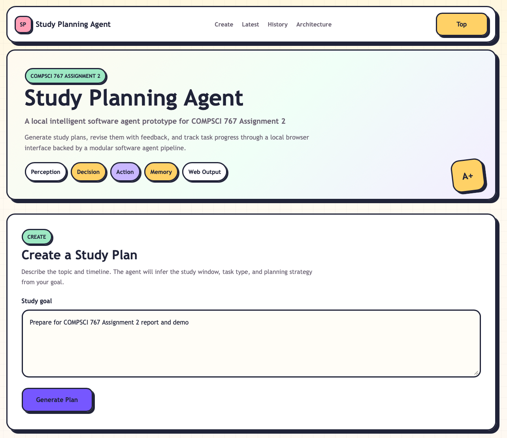
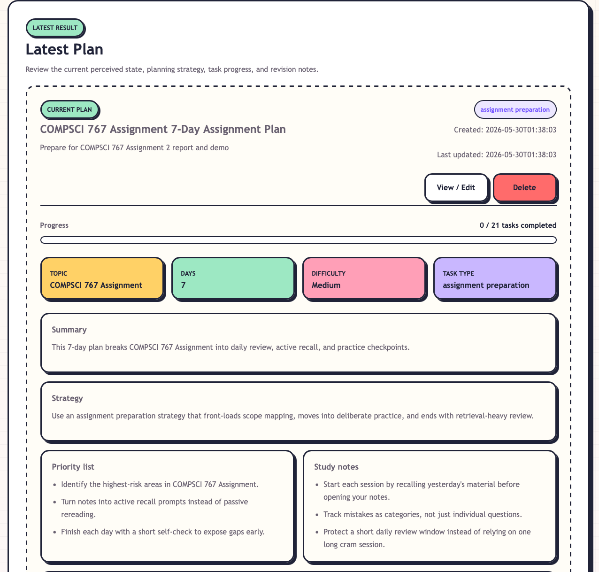
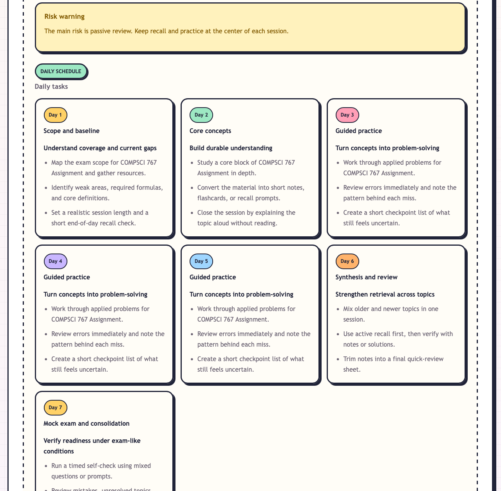
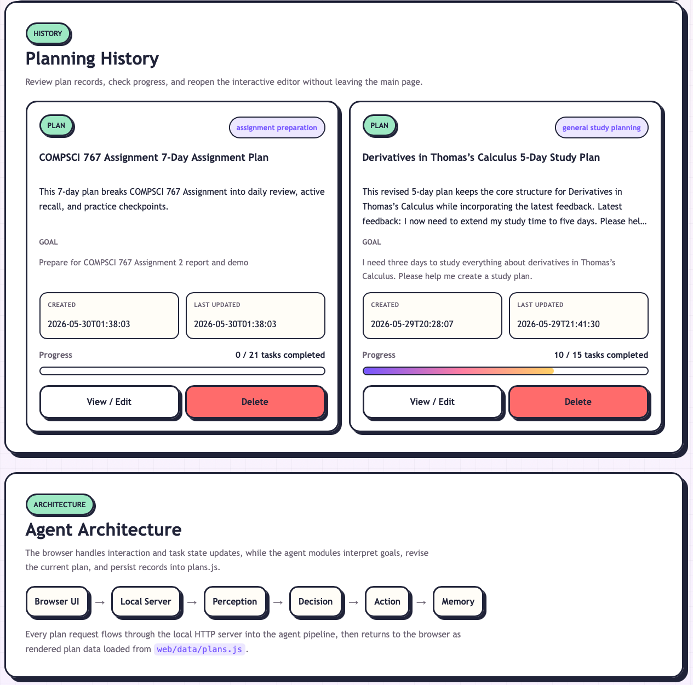

Perception
Interprets the raw user goal and identifies the topic, intended duration, difficulty level, and task type.
Local Intelligent Software Agent Prototype for COMPSCI 767 Assignment 2
GitHub repository: https://github.com/Leth3323/A-local-intelligent-software-agent-prototype-for-COMPSCI-767-Assignment-2
Study Planning Agent is a local browser-based intelligent software agent prototype. It acts as a personal study planning assistant: the user enters a natural-language goal, and the agent converts it into a structured plan with a concise title, topic, duration, difficulty level, task type, summary, strategy, priorities, notes, and daily tasks.
The prototype stores plans locally and supports practical interaction after generation, including viewing plan details, updating a plan from feedback, deleting previous plans, and changing task progress between To Do, In Progress, and Done.
Interprets the raw user goal and identifies the topic, intended duration, difficulty level, and task type.
Creates or revises the structured study plan, including daily tasks, strategy, priorities, warnings, and notes.
Packages the generated output into a plan record and preserves task-status information during plan updates.
Saves generated plans, feedback revisions, task progress, and deletions in the local project data store.
The user submits a goal through the browser. The local server passes the request to the agent pipeline, which analyses the input, generates a day-by-day plan, records it locally, and returns it to the interface. The user can then inspect details, mark progress, revise the plan with feedback, or remove outdated records.
Screenshots from the local Study Planning Agent prototype




The prototype demonstrates a complete local intelligent-agent loop. It turns informal study goals into actionable plans, stores the results locally, and supports continued user interaction through feedback, task-progress updates, history, editing, and deletion.